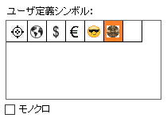
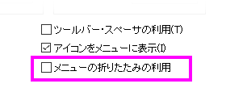
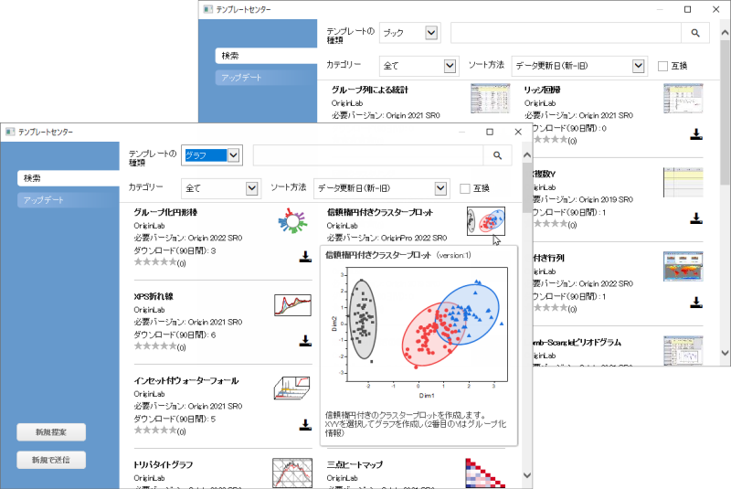
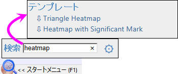
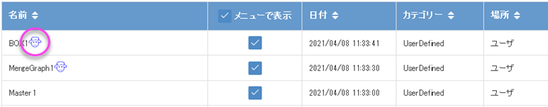
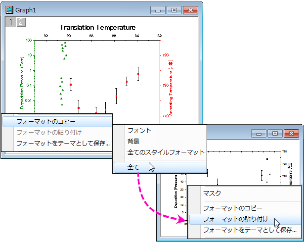
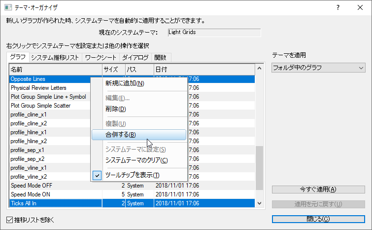
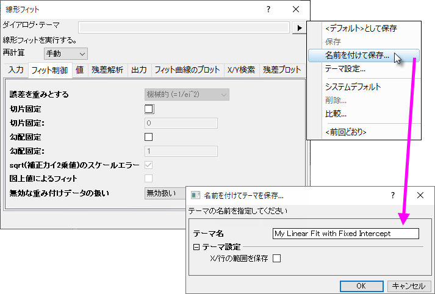

Originのカスタマイズ
Originのカスタマイズ
初期設定をカスタマイズ
オプションダイアログボックスによるユーザ独自の設定
Originのカスタマイズ、グローバル設定
オプションダイアログボックス環境設定：オプション
Excelオプションダイアログボックスでは、 数値表示、ファイルパス、テキストフォント、Originプログラムを開く / 閉じる際の動作などに関するOrigin全体の設定を制御できます。
オプションダイアログボックスを開くには
- メニューから環境設定：オプションを選択します。(どのOriginウィンドウがアクティブでも可)
- メニューからウィンドウ：Originオプションを選択します。(Excelワークブックがアクティブの場合)
|
|
コントロール
|
| (オプション) 軸タブ
|
- 数値および日時スケールの目盛りの最大数
- 目盛ラベルからの距離
- 目盛ラベル、軸タイトルの単位表示でゼロの表示と科学的表記
 | Origin 2020bでは、「0」の表示をコントロールするための2つのチェックボックスが追加され、デフォルトでオンになりました。
Origin 2021以降、これらのオプションはデフォルトでオフになっています。
|
|
| Excelタブ
|
- XY属性のデフォルト割り当て
- 凡例テキストのデータセットを自動検索
- Excelファイルがドラッグ&ドロップで開かれる時、Excelワークブック保存時の確認
|
| ファイルの格納場所タブ
|
- 最近開いた、最近保存した、最近エクスポートしたファイルを追跡するファイルパスを設定
- 異なるファイルタイプをインポートするためのデフォルトパスとファイル拡張子を設定
- ASCIIインポートダイアログの適用可能なファイルタイプを定義
|
| グラフタブ
|
- グラフの破線、線とシンボルの間隔、ユーザ定義シンボルなど
- 2Dグラフのアンチエイリアシング
- 別のアプリケーションでリンクされたグラフや埋め込まれたグラフの内部編集を有効にする
- スピードモードでのウォーターマーク表示
 | Origin 2022から、ユーザ定義シンボルについて、これまでの制限をなくして簡単にカスタムシンボルを適用できます。
- 
- クリップボード、.bmp、.svg フォーマットに対応
- B&W、色付きシンボルに対応
- オプションダイアログか、作図の詳細のクリップボードから追加ボタン（シンボルタブ > カスタムコンストラクションにチェック > ユーザ定義シンボルラジオボタン）でシンボルを追加
|
|
| その他のオプションタブ
|
- プロキシサーバーの設定
- ASCIIインポートのデフォルトテンプレート
- カスタム日時フォーマット
- メニューの折りたたみの利用
- Originワークスペースでデータセット名を使用
| Originで使用するPythonパッケージの管理とインストールを行うPythonパッケージダイアログで、プロキシサーバー経由のペッケージインストールをサポートしています。環境設定：オプションを開き、その他のオプションタブのHTTPプロキシサーバーを使うを選択してプロキシアドレスを入力します。
|
|
| 数値の表現形式タブ
|
- 科学的表記法で数値を表示するためのしきい値
- データおよびレポートシートでの表示桁のデフォルト値
- ラジアン、度、グラジアン
- 小数点記号
|
| (オプション) オープン/クローズタブ
|
- ウィンドウの閉じ方オプション
- プロジェクトのバックアップと自動保存の設定
- オプションダイアログボックスの設定の保存オプション
|
| ページタブ
|
- クリップボード、グラフの余白、CTRL+CホットキーでコピーされたOLEグラフのページサイズのデフォルトのパーセントです。
| 2021bまでは、縮小率 (%)は40 に設定されていました。今のデフォルトは100 です。
|
|
| テキストフォントタブ
|
- テキストオブジェクトのデフォルトフォント
- 単純選択モードとインプレース編集の設定
- 上付き文字、下付き文字のサイズやオフセット
- 分析レポートシートでの脚注サイズ比
|
| システムパスタブ
|
- ユーザファイル、自動保存、バックアップ、未保存およびグループフォルダの場所の表示/変更
- システムフォルダの場所（プログラム、ライセンス、アプリケーションデータ）
|
「システム変数を設定」ダイアログ
システム変数システム変数は、広範囲な調整を可能にするOriginの内部設定です。Originのシステム変数を設定ダイアログ（環境設定：システム変数）でシステム変数の値を確認、設定できます。ダイアログで、システム変数一覧というリンクをクリックするとWebページが開きます。システム変数全てのリスト、デフォルト値、解説を確認できます。
システム変数をカスタマイズするには、
- システム変数の設定の最初の列に、@記号を除いたシステム変数名を入力します。例えば、分析ダイアログボックスの再計算モードを「種類：DAM」で、全体を変更したい場合、
- 2番目の列をクリックして現在の値を表示し、新しい値を直接入力します。例えば、DAMで再計算を自動に設定するために、値を1と入力します。
- 3番目の列には任意でコメントを入力し、OKボタンをクリックしてダイアログを閉じます。
これで値が記憶され、Origin起動の度に設定した値が使用されます。
クリプトウィンドウ（ウィンドウ：スクリプトウィンドウ）で、以下のように@systemVariable=と入力すると、書き込み可能なシステム変数値の確認や設定ができます。
@DAM=
ENTERを押します。この方法でシステム変数の値を設定する場合、スクリプトウィンドウでの入力は現在のセッションの変数値のみを設定することに注意してください。
3D OpenGL設定ダイアログ
OpenGL 3D Graphing, Hardware Compatibility Orignの3DグラフはOpenGL(Open Graphics Library) ベースで作図されます。OpenGLにより、素早い描画、スムーズな回転やズーム、透過性設定、ライト効果などの、より強化されたパフォーマンスを提供します。
最適なパフォーマンスを得るためには、ビデオカードが3.0以上のOpenGLのバージョンをサポートしている必要があります。ローカルコンピュータのOpenGLサポート情報を確認するには、Originを起動し、環境設定：3D OpenGLの設定を選択してダイアログを開きます。OpenGL情報の項目にサポートしているバージョンが表示されます。
グラフィックスハードウェアが古い場合、グラフの透過やアンチエイリアシングの設定等がサポートされないことがあります。このダイアログの設定ノードで透明度の設定を無効にするなどの設定変更が可能です。また、ダイアログではOpenGLの設定をオフにする方法も提供しています。
OpenGLについての詳細は、この章の最後にある「詳細情報」の下のリンクをご覧ください。
メニューのカスタマイズ
カスタムメニュー メニュー, カスタマイズ
メニューの折りたたみ
多くのソフトウェア製品と同様に、Originは自動で「折りたたむ」メニュー機能を使用すると、メニュー項目が多い場合にメニューコマンドの一部を折りたたんで表示します。開いたときにすべてのメニューを表示したい場合は、環境設定：オプションをクリックし、その他のオプションタブをクリックし、メニューの折りたたみの利用のチェックボックスをオフにします。
- 
カスタムメニューオーガナイザ
カスタムメニューオーガナイザ頻繁に使用するスクリプトがある場合、メニューとして配置して簡単にアクセスできるようにすることが可能です。カスタムメニューオーガナイザを使うと、以下のことが可能です。
- 最大3つのメインメニューと対応するサブメニューを作成
- LabTalkスクリプトやXファンクションをメニューアイテムに割り当て
- メニュー項目の利用可否を、指定したウィンドウタイプがアクティブなときのみに制限
- 使用しないビルトインメニューアイテムを非表示にして、ワークスペースを活用する
カスタムメニューオーガナイザを開くには、メニューの環境設定：カスタム・メニューオーガナイザを選択します。F1キーを押すか、ダイアログ右上にあるボタンをクリックしてこのダイアログに対するヘルプファイルを開くことができます。
新たなメニュー設定ファイル（.ocm）を保存すると、環境設定：メニューからこの設定を選択可能です。複数のOCMファイルを作成可能で、ひとつの設定から他の設定へ簡単に切り替えできます。メニューの「環境設定：メニュー」でデフォルトを使用すれば、デフォルトのメニュー設定に戻すことができます。設定ファイルを同僚間で共有して、共通のメニューコマンドを使用することができます。
アイコンをメニューに表示
ツールバーボタン、メニュー内いくつかのメニュー項目の左側にはビットマップイメージがアイコンとして付いています。このアイコンがある場合、同じ操作を実行するボタンがツールバーにあることを示しています。
仮想環境やターミナルサービスのようなシステムの場合、アイコンにより、メニューを開く際に時間がかかることがあります。メニューのアイコンを表示しないようにするには、
- メニューの環境設定：オプションを選択し、オプションダイアログボックスを開きます。
- その他のオプションタブを選択し、アイコンをメニューに表示チェックボックスのチェックを外し、OKをクリックします。
ツールバーとボタンのカスタマイズ
標準のWindows OSのツールバーカスタマイズに加え、Originはカスタムツールバ―ボタンの作成、プログラミング、配布のために、便利で使いやすいツールを提供しています。複雑で反復的なOriginのルーチンを実行している場合は、カスタムツールバーを作成し、また共有して使用すると良いでしょう。
ツールバーとボタン, カスタマイズ ボタンとツールバーのカスタマイズ ツールバーの変更
ツールバーボタンの表示/非表示/移動
- ツールバーの右端に配置されている、下向きの矢印をクリックし、コンテキストメニューからボタンの表示/非表示を選択。表示されたサブメニューでチェックするかはずして、ボタンの表示/非表示を制御。リセットオプションを利用可能。
- ALTキーを押しながら、ボタンをドラッグして他のツールバーに移動可能
- ALTキーを押しながら、ボタンをOriginのワークスペースにドラッグして新しいツールバーを作成
- ALTキーを押しながら、Xマークが表示されるまでボタンをドラッグして離し、削除
ツールバーボタンの外観表示をカスタマイズ
オプションタブ（表示：ツールバー）を使用すると以下が可能です。
- ツールチップとショートカットキーの表示
- ツールバーとツールバーボタンのサイズを大きくする
- ツールバーボタンを平らまたは3Dに切り替える
ツールバーの表示/非表示
- ドッキングされたツールバーの左/上端でダブルクリックしてドッキングを解除します。フローティングツールバーのタイトルをダブルクリックしてドッキングします。
- フローティング時は、Xボタンをクリックしてツールバーを非表示に設定します。ドッキングされたツールバーの左端でダブルクリックしてドッキング解除。フローティングツールバーのタイトルをダブルクリックしてドッキングします。
- ドッキング時は、ツールバー左/上端をつかんでドラッグして配置変更できます。
- 複数のツールバーの表示/非表示を設定するには、メインメニューの表示：ツールバーから行います。ツールバータブのチェックボックスを使用してツールバーの表示/非表示を制御します。新規作成ボタンをクリックして新たなツールバーを追加し、ボタングループタブにあるボタンをドラッグしてツールバーに追加できます。
- リセット、すべてリセットボタンでツールバーの設定をリセットします。
新たなビットマップイメージを使用してツールバーを作成
Originでは、LabTalkスクリプトで、新たなツールバーボタンを作成し、クリックするとスクリプト（組み込み、ユーザ定義ともに）が実行されるようにすることができます。メインメニューの表示：ツールバーと選択して、ボタングループタブで新しいボタングループを作成します。
- Originにはデフォルトで3つのユーザ定義用ボタングループを用意しています。
- ボタンをひとつ選択し、設定ボタンをクリックして、新しいボタンにリンクした.ogsファイル（スクリプトファイル）を指定します。
- ボタンをOriginのワークスペースにドラッグしてツールバーボタンを作成します。
- 自身で用意したビットマップイメージを使用したボタンを作成したい場合、Originでは16色で16 × 16ピクセルのビットマップイメージを使用して新たなボタングループを作成できます。
- ボタングループを.OPXファイルとしてエクスポートすると、他のOriginユーザと共有することができます。エクスポートしたボタングループを使用できるようにインストールするには、OriginのワークスペースにOPXファイルをドラッグアンドドロップします。
| Note：ユーザ定義ツールバーの作成とエクスポートについての詳細は、下記を確認してください。
ヘルプ：Origin：Origin ヘルプ > カスタマイズと自動化 > ツールバーのカスタマイズ
|
ウィンドウタイトルバーにカスタムボタンを追加
ウィンドウタイトルバーの最小化ボタンの左に、システムボタンを追加することができます。このボタンにはカスタムLabTalkスクリプトを対応させることができます。
| Note: 詳細は、次のプログラミングのヘルプファイルをご覧ください。
ヘルプ：プログラミング：LabTalk > Language Reference > Object Reference > Alphabetical Listing of Objects > String
|
ステータスバーのカスタマイズ
Originのワークスペース下部に配置されたステータスバーでは、その時の操作や選択箇所、ウィンドウに応じたソフトウェアヒントや、基本統計量などの便利な情報が表示されます。
- ステータスバー上で右クリックすると、表示する項目を設定できます。
- ALTを押しながら、ステータスバーに沿って項目をドラッグします。
Originワークスペースのカスタマイズ
Originでは、プロジェクトエクスプローラやクイックヘルプ、メッセージウィンドウなどのドッキング可能なウィンドウのカスタムをサポートしています。
- これらのウィンドウのタイトルバー上で右クリックし、非表示、自動的に隠すなどの設定が可能です。
- 自動的に隠すにチェックが付いていなければ、タイトルバーでダブルクリックすればウィンドウをフロートできます。
- タイトルバーをドラッグして移動し、新たな場所にドッキング可能です。
- ワークスペースの縁に沿って複数のタブとしてドッキング可能なウィンドウを配置すれば、画面のスペースを節約できます。
- メニューの表示：ツールバーを選択し、ツールバータブで
- 再初期化ボタンをクリックすると、ツールバーとドッキング可能なウィンドウの配置がデフォルトの設定に戻ります。
- エクスポートボタンをクリックすると、現在のメニューやツールバー、ウィンドウの設定が.OPXファイルにエクスポートされます。エクスポートした設定のOPXファイルは、Originのワークスペース内にドラッグアンドドロップすれば保存した設定を適用できます。
| 場合によっては、Originワークスペースの要素が「欠落」することがあります（例えばプロジェクトエクスプローラのパネルの1つであるデータ表示ウィンドウなど）。このような場合、表示: ツールバー: 再初期化の操作でワークスペースをリセットできます。この操作の欠点は、ワークスペースのカスタマイズとツールバーの設定をリセットしてしまうことです。Origin 2018から、再初期化ボタンをクリックすると、以前のバージョンのワークスペース設定を復元するか、2018のシステムデフォルトを使用するかを尋ねる警告メッセージが表示されます。
|
テンプレートとテーマ
テーマ テンプレート
グラフページのようなOriginオブジェクトは、広範囲なオブジェクトプロパティの組合せであり、繰り返し使用するためのカスタム設定を作成するのに役立ちます。 カスタム設定はテンプレートおよびテーマとして保存でき、以下のセクションにて簡単に説明します。
| Note: 詳細については、Originのヘルプをご覧ください。
ヘルプ：Origin：Origin ヘルプ > Originの基本 > Origin のテンプレートファイル (OTW, OTP, OTM)
|
テンプレート
テンプレートのコンセプトは、グラフやワークブック、行列、分析テンプレート™にまで通じています。テンプレートは、プロパティや管理の設定を選択したり、繰り返して使うためにそれらの設定を保存したりできます。
テンプレートセンター
新規ブック（ファイル：新規作成：ワークブック/行列/参照...）とテンプレートライブラリ（作図：ユーザテンプレートに作図）ダイアログには、テンプレートセンターを開くボタン があり、追加のテンプレートを参照してダウンロード可能です。
があり、追加のテンプレートを参照してダウンロード可能です。
テンプレートセンターを直接開くには、ツール：テンプレートセンターを選択してテンプレートの種類をグラフまたはブックに設定します。

| スタートメニューから追加のテンプレートを検索して、直接インストールできます。
- 
|
ワークブックテンプレートと分析テンプレート
フォント、色、表示形式、カスタムヘッダ行、シートに結びついているワークシート、次元や座標の設定といったワークブックや行列ブックの設定を、「OTWU (ワークブックテンプレート)」や 「OTMU (行列テンプレート)」ファイルに保存することができます。
ワークブックまたは行列ウィンドウがアクティブなときに、ファイル：テンプレートの新規保存 を選択すると、保存時にウィンドウに存在する可能性のあるすべてのデータをテンプレートファイルに保存します。テンプレートファイルを使用して、必要に応じてデータの保存と分析のための新しいウィンドウを作成することができます。
新しいブックダイアログボックスを使用して、ワークブック、行列ブック、および分析テンプレートを管理できます。新しいブックダイアログはOrigin2021bで刷新され、このユーザガイドのワークブックの章で説明されています。
同じ新しいブックダイアログで分析テンプレート™を管理します。分析テンプレートはワークブックから始まりますが、分析テンプレート（ファイル：ワークブックを分析テンプレートとして保存）として保存すると、保存時にワークブック内に存在する分析操作と関係するグラフ操作で保存されます 。バッチ処理 における分析テンプレートについての詳細は、このガイドのバッチ処理と繰り返し処理の制御方法の章で説明しています。
分析テンプレートについての詳細は、以下の項目もご覧ください。
グラフテンプレート
グラフの編集の章で説明したように、Originには、Originの多くの科学および工学グラフタイプを作成するために使用される約240の組み込みグラフテンプレートが付属しています。これらのグラフテンプレートをひとつ選択して、レイヤを追加したり、レイヤのスケールや大きさを設定して、データプロパティを変更することで、カスタマイズしたグラフに作り変えることができます。さらに、ファイル：テンプレートの新規保存...と操作して、このカスタマイズしたグラフをユーザ定義グラフテンプレートファイル (.otp)として保存することができます。 グラフテンプレートの一般的な説明については、「グラフの編集」の章の「テンプレートとテーマ」セクションを参照してください。
グラフテンプレートの重要なものに、「クローンテンプレート」があります。クローンテンプレートでは、ワークシートまたは行列に特定のデータ配置が必要です。クローンテンプレートを作成しておくと、 ワークシート・データセット、行列オブジェクトなどと、グラフ内のレイヤやパネルなどの複雑な配置を作成した場合でも、その設定を再度行う必要はありません。クローンテンプレートは、テンプレート名またはサムネイル画像の横に「ヒツジ」アイコンが表示されることで、テンプレートライブラリで識別できます。
- 
クローンテンプレートについての詳細は、Originヘルプファイルのグラフテンプレートの基本をご覧ください。
テーマ
ダイアログボックステーマ分析テーマグラフ, テーマグラフ, コピー/貼り付け テーマはオブジェクトのプロパティやダイアログの設定を保存したファイルです。例えば、編集したグラフの設定や、ダイアログで設定した項目をテーマとして保存することができます。テーマオーガナイザ（下記参照）には、グラフ、ワークシート、ダイアログ、関数、システム推移リストのタブがあります。
保存したテーマはグラフ等のオブジェクトに素早く適用できます。例えば、カラーのグラフに白黒テーマを適用すれば、すぐに出版用のグラフを準備できます。また、同じプロジェクトにあるグラフすべてに対して、一つのオブジェクトプロパティを適用することも可能です。
グラフのプロット、レイヤ、オブジェクトなどの上で右クリックして、あるいは、グラフで何も選択しないで右クリックして、フォーマットのコピーコンテキストメニューを選択します。 右クリックした場所に応じて、利用できるフォーマットをコピーすることができます。対応する選択を右クリックしたり、目的のグラフ内で右クリックしてから フォーマットの貼り付けをクリックして、目的とする選択やグラフに、コピー設定を適用します。編集：フォーマットの貼り付けを選択して、複数の目的とするグラフに貼り付けることが出来ます。

環境設定メニューからテーマ・オーガナイザダイアログを開きます。 このダイアログは、グラフ、ワークシート、ダイアログのテーマを管理するのに使用します。テーマ管理
また、このダイアログを使って、グラフテーマを複数のグラフに適用し、見た目を統一できます。複数のテーマをテーマオーガナイザダイアログで統合するには、テーマを選択する際にCtrlキーを押しながら選択し、右クリックをしてコンテキストメニューから統合を選んでください。 ツール内のコンテキストメニューには、テーマを編集するオプションもあり、ユーザが既存のテーマのプロパティを追加/削除できます。グラフテンプレートがシステムテーマの上書きを許可していれば、新規作成グラフに自動で適用するシステムテーマとして、設定します（グラフテンプレート編集ダイアログのシステムテーマ・推移リストを優先させるチェックボックスをご覧ください）。

テーマのコンセプトはダイアログボックスの設定にも拡張しています。例えば、線形フィット（解析：フィット：線形フィット）のダイアログで設定した項目を、テーマファイルとして保存し、以降同じ設定で解析したいときにせていを呼び出すことができます。 複数のテーマファイルを各ダイアログごとに設定し、必要に応じてダイアログから呼び出すことができます。ダイアログボックスのダイアログ・テーマドロップダウンリストを使用します。 複数のダイアログテーマを保存することで、異なる実験データを解析する際に、それぞれのデータに応じた設定を呼び出して使用できるようになります。

ダイアログテーマについての詳細は、このガイドの繰り返し処理の方法の章で説明しています。
参考